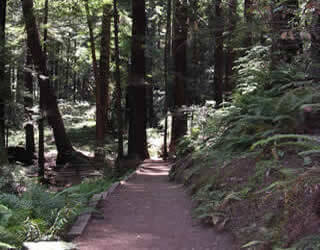

Activities at Pacific Trails Resort
Hiking
Pacific Trails Resort has 5 miles of hiking trails and is adjacent to a state park. Go it alone or join in one of our guided hikes.
Kayaking
Ocean kayaks are available for guest to use.
Bird Watching
While anytime is a good time for bird watching at Pacific Trails, we offer guided bird watching trips at sunrise several times a week.